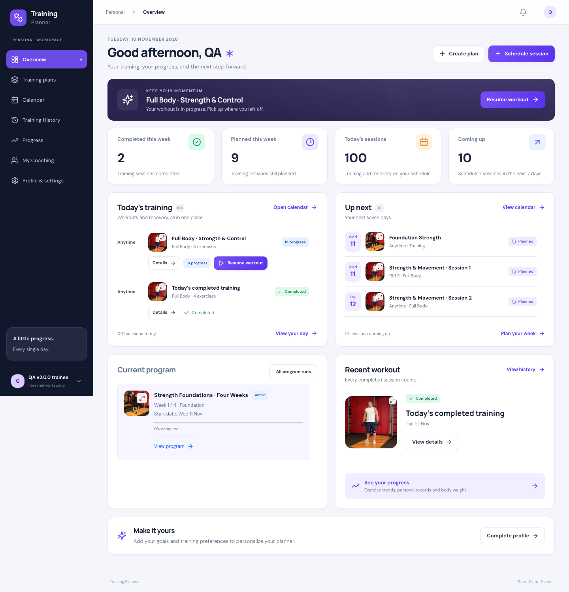
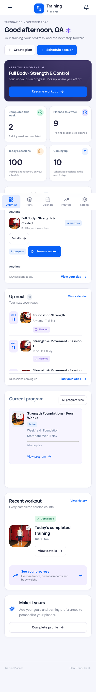

READY — DEPLOYED AND VERIFIED
Personal Dashboard
Reference design · v2.6.2
The same navy focus banner, violet desktop accents, blue mobile
controls, rounded panels and clear hierarchy as the approved
Coach Workspace design.
Baseline: v2.6.1 · Scope: Personal Dashboard and its navigation
shell.
What changed
-
A personal greeting, date, Create plan and Schedule session
actions.
-
A prominent workout banner that starts the next session or
resumes the existing active workout.
-
Four factual metrics: completed training this week, planned
training this week, today’s sessions, and the next seven
days.
-
Today and Upcoming panels with clear dates, Anytime labels,
status, clickable image previews and existing workout
controls.
-
Current program cards from the existing lifecycle renderer,
or personal plans when there is no current run.
-
A larger recent-workout image, History and Progress links,
weekly body-weight check-in and profile completion.
-
Personal mobile navigation for Overview, Plans, Calendar,
Progress and Settings; the account retains Personal
Workspace identity.
Design and behavior
Desktop uses a two-column grid; phones use a single column with
the same content hierarchy. List panels stay at 390px and scroll
internally. The stress check used 100 actual disposable
sessions; every item remains reachable. Empty accounts show zero
values and useful next actions.
The shared reference theme now has a common CSS scope used by
Coach Workspace and Personal Dashboard. Other Personal pages
retain their current layouts. No routes, database schema,
authorization, subscription rules, scheduling rules or workout
calculations changed.
Today’s count includes training and recovery; weekly
completed/planned metrics count training sessions. Program
completion uses the existing resolved-week calculation. No
invented chart data, new scoring system or fabricated reminder
times.
Desktop
Disposable QA data, including a deliberately large schedule for
scroll verification.

Mobile
Responsive browser testing; no physical-device claim.

Verification
Browser checks covered Start/Resume, Mark completed, Create
plan, Schedule session, body-weight saving, profile completion,
image preview, History/Progress navigation, empty states, long
lists, mobile navigation and Coach context regression. PWA
coverage includes cache privacy, disabled push, preferences,
CSRF, offline behavior and reconnect.
Existing domain concurrency suites were not rerun for this
presentation-only change; no domain implementation changed. Full
SQLite and MySQL regression suites passed.
Evidence:
release gates ·
browser runs ·
HTTP checks ·
100-session check ·
local integrity.
Release files
- resources/js/Pages/Dashboard.jsx
- resources/js/Components/AppLayout.jsx
- resources/js/app.jsx
- resources/css/coach-refresh.css
- resources/css/personal-dashboard.css
- tests/Browser/personal-dashboard.mjs
Immutable tag: v2.6.2. Release commit:
e7a3a986a511e4526f1121e3375ae7de91f2aa7e. Pushed to
origin/main and tagged without changing earlier tags.
Production — deployed and verified
READY — DEPLOYED AND VERIFIED.
Open Personal Dashboard.
Hostinger’s live baseline matched all 8,124 v2.6.1 runtime
fingerprints. The release was built from the immutable v2.6.2
tag, installed from an allowlisted checksum-verified archive,
and checked against 8,207 runtime hashes after activation. PHP
8.3.36; MariaDB 11.8.9-MariaDB-log. All 17 migrations stayed
unchanged; this release required no schema change.
Fresh database, runtime, uploads and environment backups were
taken at 2026-11-10T10:32:53+00:00 before runtime replacement.
Database decompression and both ZIP archives were checked.
Backups remain in protected production storage.
The live test initially checked completion before the response
had rendered; saved server state was correct. The browser
assertion now waits for the visible Completed status. Both
engines passed the corrected check. This changes test
synchronization only; deployed runtime and immutable tag are
unchanged.
Evidence:
production verification and backup hashes
·
live browser checks
·
live HTTP checks
· immutable build.
Live desktop screenshot
·
Live phone-width screenshot
·
Live empty state
·
Coach regression screenshot.
Known limits
The Personal Dashboard is the scope of this update. Full
Personal Workspace restyling is not claimed. This release adds
no new metrics, billing, notification delivery or offline
workout editing. No known blocker or high-severity issue remains
in local testing.